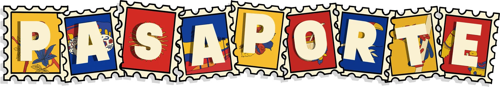

The Latin Tribute Party
Dein Pass für die Nacht.
Wir verkaufen keine Tickets. Wir verkaufen Destinationen.
#NoPassportRequired
Hamburg, Docks
Frankfurt, Fortuna
Volle Locations, starke Energie und eine Community, die von Stadt zu Stadt weiterwächst.
The Main Experience
Pasaporte Latino
Die Hauptedition von PASAPORTE und eine Feier der Vielfalt Lateinamerikas. In einer einzigen Nacht vereinen wir die Musik, Kulturen, Traditionen und Energien verschiedener Länder zu einem Erlebnis.
- Reggaetón
- Salsa
- Bachata
- Dembow
- Die Hits des Kontinents
- Gäste bringen die Flagge ihres Landes mit.
- Jeder DJ repräsentiert sein Land und spielt dessen typische Sounds und Hits.
- Bunte Deko, inspiriert von den Straßen Lateinamerikas.

Flight Editions
Eine Nacht.
Ein Land.
Jede Flight Edition widmet sich ganz einem Land: mit landestypischer Musik, Deko, Shows, Folklore, Snacks und Signature Drinks. Keine Edition gleicht der anderen.
- Boarding PassFlug PSP 01
Flight toKolumbien
- Passagier
- Du
- Sitz
- Tanzfläche
- Status
- Termin folgt
- Boarding PassFlug PSP 02
Flight toPuerto Rico
- Passagier
- Du
- Sitz
- Tanzfläche
- Status
- Termin folgt
- Boarding PassFlug PSP 03
Flight toMexiko
- Passagier
- Du
- Sitz
- Tanzfläche
- Status
- Termin folgt
- Boarding PassFlug PSP 04
Flight toBrasilien
- Passagier
- Du
- Sitz
- Tanzfläche
- Status
- Termin folgt
- Boarding PassFlug PSP 05
Flight toArgentinien
- Passagier
- Du
- Sitz
- Tanzfläche
- Status
- Termin folgt
Für viele Gäste ist PASAPORTE eine Reise zurück in ihre Heimat. Für andere die Möglichkeit, ein neues Land zu entdecken, ohne die Stadt verlassen zu müssen.
Gate offen
This is the final call for boarding.
Alle Editions und Flyer auf Instagram: @pasaportelatino.event